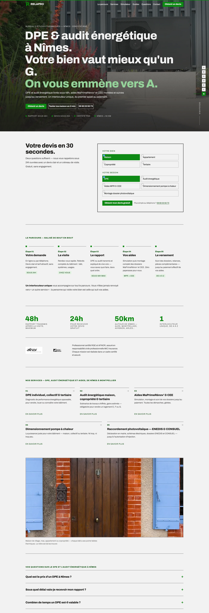
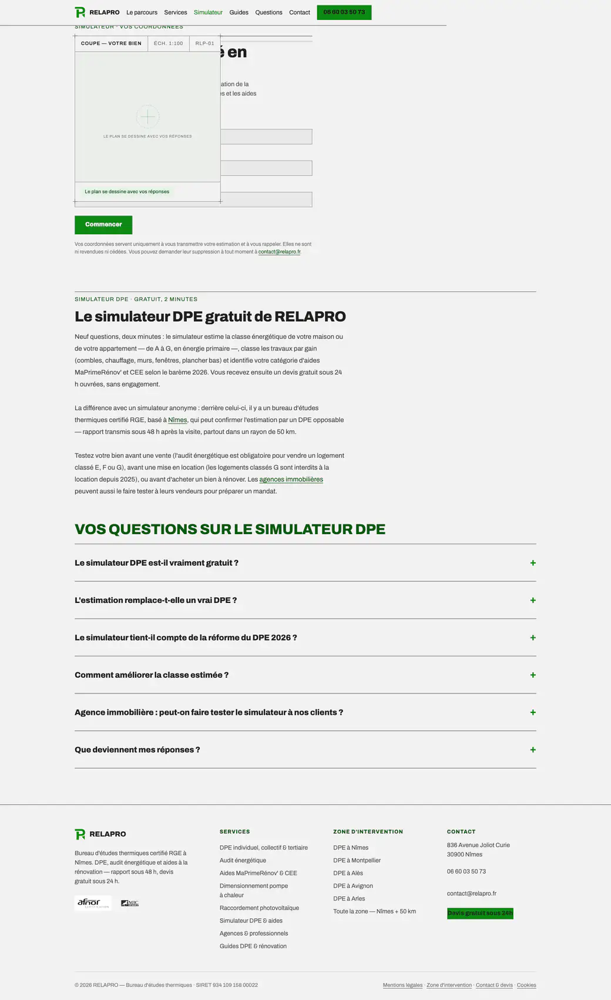
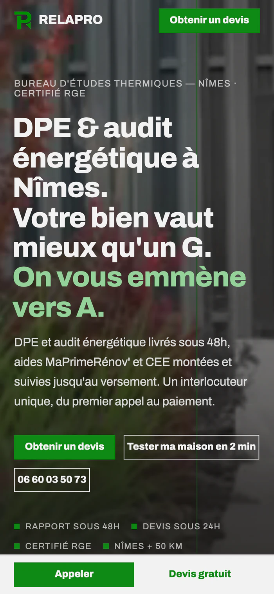

Relapro
Le DPE raconté comme une trajectoire : une échelle de G vers A qui grimpe au fil du défilement.
Voir le site en ligne →
Le point
de départ.
RELAPRO est un bureau d'études thermiques certifié RGE installé à Nîmes, qui intervient dans un rayon de 50 km. Son métier — DPE, audit énergétique, dossiers MaPrimeRénov' et CEE — s'adresse à des propriétaires qui arrivent contraints : depuis le 1er janvier 2025, un logement classé G ne se loue plus, et vendre un bien E, F ou G impose un audit réglementaire. Le sujet est réglementaire, anxiogène et illisible, et un bureau d'études local se retrouve à concurrencer des plateformes nationales sur « DPE Nîmes ».
« Maison de village, mas, appartement ou copropriété — chaque bâti a ses points faibles thermiques. Le nôtre est de les trouver. »
Extrait du site relapro.fr
Ce que
j'ai fait.
Le détail de ce qui a été livré, point par point.
Construit 20 pages statiques en HTML/CSS/JS sans framework : 19 déclarées au sitemap, plus les mentions légales et une page 404 dédiée.
Fait de la promesse une interface : une échelle DPE reste collée au bord de l'écran et grimpe de G vers A à mesure qu'on descend la page.
Développé un simulateur en 9 étapes et 10 écrans qui estime la classe énergétique, sort les travaux prioritaires et qualifie le prospect.
Intégré le barème MaPrimeRénov' 2026 : seuils de revenu fiscal de référence hors Île-de-France, de 1 à 5 personnes, extrapolés au-delà.
Couvert cinq villes en SEO local — Nîmes, Montpellier, Alès, Avignon, Arles — plus une page zone d'intervention.
Gardé la grille tarifaire côté serveur dans un _tarifs.php jamais exposé au navigateur, et envoyé les demandes en POST vers /envoi.php avec champ piège anti-spam.
Repris le design system Modernist et posé par-dessus une surcouche maison qui redéfinit l'accent : une rampe verte de 100 à 900 dérivée du vert du logo.
Balisé le site en 22 types schema.org, dont ProfessionalService sur 11 pages avec adresse, coordonnées géographiques et téléphone.
En
chiffres.
Sitemap recompté, JSON-LD extrait, code du simulateur lu ligne à ligne.
La direction
artistique.
Une échelle DPE fixée au bord de l'écran : sept cases de G à A qui se remplissent au fil du défilement, la case active passant en vert plein. Le message « on vous emmène de G vers A » est joué par l'interface elle-même, pas seulement écrit. Autour, une mise en page très typographique sur fond gris chaud, sans ombre ni carte arrondie, ponctuée d'un écran de transition entre les pages où le logo se retrace en 800 ms.
Typographie : Archivo, une seule famille pour les titres et le texte


L'histoire.
RELAPRO fait des DPE. Le problème n'est pas le diagnostic, c'est ce qu'il déclenche : un propriétaire qui apprend qu'il est classé G ne sait ni quoi faire, ni dans quel ordre, ni qui paie. J'ai donc construit le site autour d'une trajectoire plutôt qu'autour d'un catalogue. Une échelle DPE reste collée au bord de l'écran et grimpe de G vers A à mesure qu'on descend la page : la promesse rendue littérale. Derrière, un simulateur en 9 questions estime la classe, sort les travaux prioritaires et qualifie le prospect. Et vingt pages couvrent les recherches réelles : cinq villes, cinq guides, la réforme 2026.
Causons.
Un site à construire, un référencement à reprendre, ou simplement une question technique : je réponds vite, et toujours en personne.
M'écrire un mot →